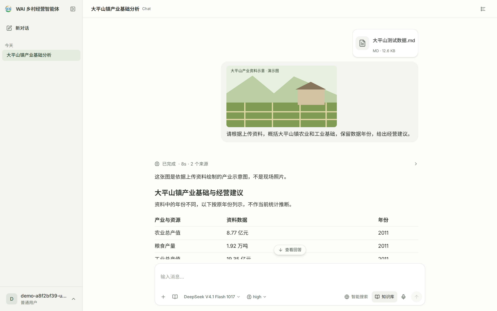
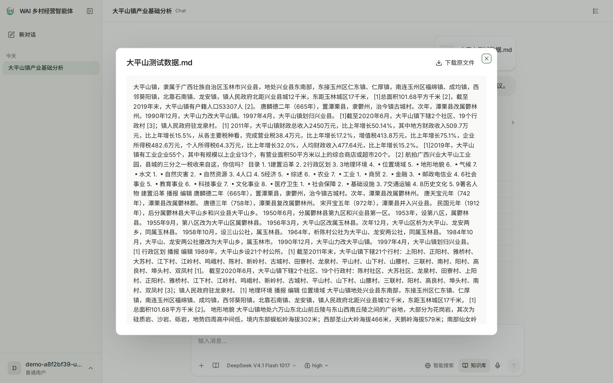

上传图片和文件
工作的依据多在文件里：政策文件、年报、台账、预算表、现场照片。上传后，助手读取其中的内容，并在回答里引用具体数据。
#上传方式
有三种方式，任选一种。
- 点「+」按钮。 点输入框左下角的「+」，在弹出的窗口里选择文件。可以一次选多个。
- 拖进页面。 把文件从文件夹直接拖进对话页面。
- 粘贴图片。 复制一张图片，点输入框，按
Ctrl+V（Mac 用Command+V）。
上传的文件随你下一条发送的消息一起交给助手。先上传，再写问题，最后发送。
回答进行中，不能添加新的附件。等当前回答结束，再上传。
#文件状态
文件上传后，输入框里出现一张文件卡片。

卡片显示三样信息：文件名、格式和大小。写问题之前，看一眼卡片状态：
| 卡片显示 | 含义 | 你该做什么 |
|---|---|---|
| 等待上传… | 前面的文件还在传，这个排在后面，尚未开始发送 | 等待，不用重复点上传 |
| 上传中… / 上传中 45% | 文件正在发送到服务器 | 等待 |
| 处理中… | 文件已收下，系统正在读取内容 | 等待，状态消失后再发送 |
| 显示文件大小 | 文件已读取完成 | 写问题，发送 |
| 上传失败，请重试 | 这次没有送到，例如网络中断、请求过于频繁或服务繁忙 | 卡片上的重试按钮，用同一个文件重试 |
| 解析失败，请重试 | 文件已收下，但读取内容没有成功 | 点重试；仍失败，换一个格式再上传 |
同一时间只有前两个附件在传，其余显示「等待上传…」，按顺序自动开始。这样不会一次打开很多请求，也不会让每张卡片都停在半路。
卡片不会自动反复重试：失败后保留原文件，等你点重试。服务器提示的原文（例如「操作过于频繁，请稍后重试」）会显示在卡片上。
卡片右上角的 × 可以移除这个文件。移除排队中的文件后，它不会再发出去。
#支持的文件
| 类型 | 格式 |
|---|---|
| 文档 | PDF、Word（.docx）、PowerPoint（.pptx） |
| 表格 | Excel（.xls、.xlsx）、CSV |
| 文本 | .txt、.md（Markdown）、.html、.xml、.json |
| 图片 | JPG（JPEG）、PNG、GIF、WebP |
#大小和数量
- 单个文件： 文档不超过 5 MB，图片不超过 5 MB。
- 一次选图片： 最多 4 张，合计不超过 20 MB。
- 当前草稿： 文档最多 10 份、合计不超过 50 MB；图片最多 8 张、合计不超过 40 MB。
- 空文件不能上传。
服务器还会按整段对话累计核对：这段对话里前面已经发过的附件，也算在额度里。输入框只能看到当前草稿，所以草稿没超限、但整段对话已经用满时，服务器会拒绝并给出提示。这时的办法是把 PDF 拆成几份、压缩图片，或者开一段新对话。
超出限制时，文件卡片上会直接显示原因，例如「图片不能超过 5MB」「每次最多选择 4 张图片，且合计不超过 20MB」。文件太大时，可以先把 PDF 拆成几份，或者压缩图片，再分别上传。
#文件读取方式
助手不会一次读入整个文件，而是按需读取：先看目录，再读与问题相关的部分。过程区显示每一步：
- 「查看文档目录」：先看这份文件有哪些部分。
- 「已阅读对话文档」：读取具体内容。
- 「查看文档页面」：看 PDF 的某一页。
- 「搜索对话文档：“关键词”」：在文件里按关键词查找。
所以你的问题越具体，助手越能直接定位到需要的部分。
#按文件类型提问
#PDF、Word、PPT
附件是一份政策文件。请列出申报条件，每条标明原文在第几页。请用五句话概括这份调研报告，再列出报告中所有带数字的结论。#Excel、CSV
表格类文件，把要看的位置说清楚：工作表、行、列、字段。
请读取「预算总表」这个工作表，找出对现金回收期影响最大的三项假设。附件里 B 列是月份，E 列是收入。请算出全年总收入，以及收入最高的三个月。数字的计算，助手会调用计算工具核对，过程区里能看到「核对经营数据与算式」。
#图片
图片可以是现场照片、产品包装、手写的表格、截图。助手能识别图片里的内容和文字，过程区显示「分析用户图片」。

图中是我们村的一处闲置厂房。请描述你看到的状况，并说明适合改造成哪几种经营用途，各需要补充哪些信息。这是一张手写的收支记录。请把它整理成表格。#同时上传多个文件
可以一次传多个文件，在问题里说明它们的关系：
附件有两份文件：政策原文和我们的项目计划书。请对照政策，逐条检查项目计划书是否满足申报条件。#查看已上传的文件
文件属于这段对话，保存在你的账号下。回到历史对话，你提问下方的文件卡片依然在，点卡片可以预览，也可以下载原文件。
